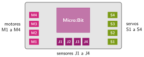
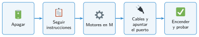

Montaje del Nezha
🤔 Pienso5 min
Qué hago aquí: Piensa un momento y contesta con lo que ya sabes. No pasa nada si no lo sabes: es para empezar.
Repartid los papeles. Cambian en cada sesión de montaje.
Monta: Lee las instrucciones:
Cuida el material:
📖 Leo y aprendo10 min
Qué hago aquí: Lee despacio, mira los dibujos y los ejemplos, y quédate con la idea clave del final.
La Micro:Bit sola no puede mover motores. Necesita una placa que le dé energía y enchufes. En el Nezha es la placa Nezha.


✏️ Hago30 min
Qué hago aquí: Haz las actividades en orden. Empieza siempre por las básicas.
Une cada elemento con sus puertos.
| Motor • | • J1 a J4 |
| Servo • | • M1 a M4 |
| Sensor • | • S1 a S4 |
Monta el chasis. Marca cada paso cuando lo termines.
base motores ruedas placa y Micro:Bit cables
Completa la tabla de conexiones de vuestro robot.
| Elemento | Puerto |
|---|---|
| Motor izquierdo | |
| Motor derecho |
Empuja el robot con la mano sobre la mesa. ¿Va recto? ¿Se mueve alguna pieza? Escribe qué habéis reforzado.
✏️ Puedes responder escribiendo, con un dibujo o un esquema, o contándolo en voz alta.
🚀 Amplío (si quieres saber más)
Qué hago aquí: ¿Has terminado? Lee la curiosidad o elige el reto. Es voluntario.
Añade una rueda loca o un apoyo delante para que el robot no arrastre. Dibuja dónde la has puesto.
✅ Compruebo5 min
Qué hago aquí: Contesta sin mirar la ficha y marca cómo lo llevas.